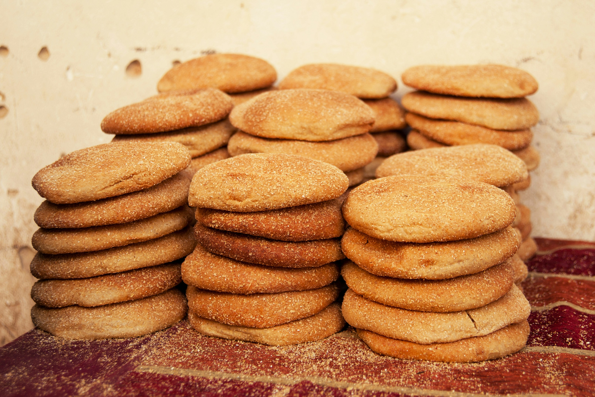

Easy Shortbread Cookies

Description
If you're searching for the best shortbread cookie recipe on the internet, stop right there! You've found it. These buttery, melt-in-your-mouth shortbread cookies are perfect for any day of the week, but will also make great additions to your holiday dessert table. Whatever the occasion, you can never go wrong with a rich and customizable shortbread cookie.
Ingredients
- 2 cups butter, softened
- 1 cup white sugar
- 2 teaspoons vanilla extract
- 4 cups all-purpose flour
Steps
- Gather all ingredients.
- Preheat the oven to 350 degrees F (180 degrees C).
- Beat softened butter and sugar together in a large bowl with an electric mixer until light and fluffy.
- Stir in vanilla; add flour and mix well until combined.
- Fill cookie press with dough and form cookies onto two ungreased cookie sheets, spacing them about 1 ½ inches apart. Bake until the edges of the cookies are just starting to turn golden brown, about 10 to 12 minutes.
- Remove the cookie sheets from the oven, and set them on a wire cooling rack for a few minutes. Then transfer the shortbread cookies to the rack to cool completely.
Home